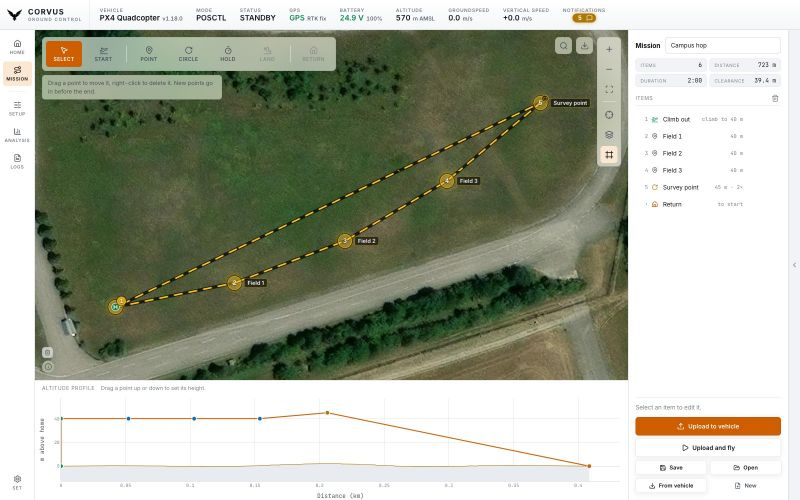

Fly
Mission planner
Draw a flight on the map, read it from the side against the real terrain under it, save it, upload it and follow it while it is flown. The planner is off by default: a station that is flown by hand never needs it.


Turning it on
Switch it on under Settings, Appearance, Pages (or in the first start setup), and MISSION appears under HOME in the left rail. The screen has three parts, and they are the same flight drawn three ways: the map, the list, and the altitude profile.
The map
A tool bar runs across the top left (the same kind of bar as the flight actions on the Home tab) and the usual zoom, fit and layer controls sit on the rail at the top right. The layer choice is shared with the Home map.
The planner opens where the Home map is looking. Pan or zoom either map and the other starts from that view the next time you open it, so the planner and the flight screen are never maps of two different places. Nothing moves the camera by itself: if the mission you were last editing is somewhere else entirely, the planner says so and leaves the view alone, and the fit button frames the plan when you ask.
Search
Next to the offline download button there is a search box. It takes:
- Place names, looked up over OpenStreetMap's Nominatim, which needs a connection.
- Coordinates, with no network at all, in whatever notation you have them:
48.0802, 11.6410,48,0802 11,6410,48.5N 11.25Eor48°04'48.8"N 11°38'27.5"E. - Your offline areas, matched by name and listed first, since they are named after exactly the places you fly from.
Picking a result flies the map there and drops a mark; press the mark to remove it.
Drawing the plan
Pick a tool and click the map:
- Start point
- Where the flight begins. Every altitude in the plan is measured from here, which is the same reference PX4 flies a mission in.
- Aircraft
- With an aircraft connected, puts the start (and the takeoff on it) where the aircraft actually stands, and keeps it there while the aircraft is carried to the field. Once it is armed, the start stays at its home, where the mission's heights are measured from. Placing the start by hand lets go of the aircraft again, and a plan saved this way starts at whichever aircraft is connected when it is opened.
- Takeoff, Waypoint, Land
- The obvious ones.
- Circle
- Orbit a point a set number of times. Greyed on PX4, with the reason on the button: PX4 has no mission item that orbits a set number of times and refuses a whole mission that contains one. Use Hold there. ArduPilot flies a Circle as drawn.
- Hold
- Stay at a point for a set time.
- Return
- Needs no click, since it names no place.
Drag points to move them. Right-click removes the last one, and Esc puts the tool rail back to the pointer. A Circle draws its real radius as a ring on the map; select it and a grip appears on the ring. Drag it to size the orbit, and pick which way round it is flown. (PX4 stores the direction as the sign of the loiter radius; Corvus keeps the radius a length and sets the sign when it uploads, because nobody should have to type a negative distance to turn the other way.)
The plan is drawn in the same amber as the Home tab's PLAN button (a dashed route and numbered rings), so a drawn mission and a set of clicked points read as the same kind of thing.
The connected aircraft
The connected aircraft is drawn on the planner's map with the same mark as on the Home tab. That matters because an aircraft does not fly to the start before it climbs: a multicopter takes off where it stands (PX4 then flies over to the takeoff point, ArduPilot goes straight on to the first waypoint), and every height is measured from where it armed. A start more than 25 m from the aircraft is pointed out while you draw, with the Aircraft button as the fix.
Aircraft type
Above the altitude profile, Aircraft says what flies the plan: multicopter, fixed wing or VTOL. While an aircraft is connected it is set automatically and named the way the top bar names it ("Quadcopter"). It is saved with the plan, so a mission drawn at the desk already looks the way it will be flown. It changes three things:
- Hold
- A fixed wing has to circle a point to stay there, so its Hold gets a ring, a radius and a direction. A multicopter simply hovers, so its Hold gets none. A quadcopter, hexacopter and octocopter are all planned the same way.
- Takeoff
- A multicopter climbs straight up from the start point. A fixed wing climbs out along the first leg at its climb pitch (10° unless the takeoff says otherwise, PX4's default) and reaches the takeoff height only after a run: 170 m for 30 m. The profile draws that run, and says so when the first point is closer than it.
- Landing
-
A multicopter flies to the landing point and descends straight down there, so the profile shows a step. The corner of that step is a point of its own: drag it up or down, or type it into Descend from, to set the height the descent starts at. Left alone, it is the height of the point before. Drag it all the way down and the aircraft dives straight in from the point before to 3 m above the landing point, where the last metres stay a slow vertical touchdown. Corvus flies the corner as a waypoint right above the landing point, which is how both PX4 and ArduCopter let a mission set that height.
A fixed wing glides down from the point before, so the profile shows the slope and writes its angle on it. A glide steeper than 5° is pointed out while you draw, with how far out or how low the point before it has to be. That is PX4's default limit (
FW_LND_ANG), and PX4 refuses a steeper approach on upload. - Return
- A return flies to where the aircraft was armed, or to the nearest rally point, at heights set on the vehicle rather than in the plan. While connected, Corvus reads those heights (the same Return settings the Safety page shows) and draws the return as it will be flown: a multicopter climbs to its return height, comes home, descends and lands. A fixed wing does not land after a return at all; PX4 and ArduPlane both circle over home until you take over. The profile ends it in the air, marked "circles here", so a fixed wing mission that is meant to come down should end with Land.
The list
On the right, the mission in order. Reorder, delete, and edit any point's exact latitude, longitude, height, orbit radius or hold time as numbers. Above it, what the plan actually costs: number of items, ground distance, estimated duration, the highest point, and the closest the route comes to the ground.
The altitude profile
Underneath, the flight seen from the side: distance flown along the bottom, height above the start point up the side, and the real terrain under the route drawn beneath it. The terrain comes from the same elevation tiles 3D uses, and is cached with them, so it works offline. Every point of the plan is marked on it, and you set each point's height by dragging it there. The gap between the line and the ground is the clearance, measured rather than worked out in your head.
Offline areas
The offline area download is on this screen too, using the same map and the same tile store as the Home tab. Planning is when you find out which ground you have no imagery for, so the fix belongs where you found the problem. An area downloaded here is an area the Home map already has; there is no second copy. See Offline maps.
Saving and opening
Missions are saved as readable JSON, in ~/.corvus/missions
unless the config file names another folder (see
where Corvus keeps its files). A plan can be copied to another laptop or kept with the rest of a
job's paperwork.
Uploading and flying
Nothing reaches the aircraft until you say so, and flying is a second decision.
- Upload to vehicle
- Writes the route and stops. The aircraft holds a mission it has not been told to run, which lets you upload from the tent and then walk out to it.
- Upload and fly
- Uploads, switches to the mission mode, arms and takes off. It asks first, and shows any warnings the plan raised.
- From vehicle
- Reads the mission the aircraft already holds into the planner: one uploaded by QGroundControl, or by Corvus before a reconnect. Anything the planner has no way to draw (a camera trigger, an altitude above terrain) is named rather than dropped, since uploading the plan again would remove it from the aircraft. When the aircraft holds a mission that is not the one on screen, the planner says so and offers to read it.
PX4 accepts a mission first and checks it afterwards (a home position for the heights to be measured from, a takeoff or landing its settings require), so an accepted upload is not yet a mission it will fly. Corvus waits the moment PX4 takes to decide, and a mission PX4 will not fly is reported as a failed upload, with the reason where PX4 names one ("it has no home position yet"), rather than as a success. ArduPilot checks at the upload, and its answer is final.
Following the flight
While the plan on screen is the one on the aircraft, the planner follows the flight: the leg being flown is drawn in green, the point it is heading for is ringed, the points behind it fade, and a line above the list says where it is ("Flying to 3. Waypoint", paused, finished). Edit the plan, or let another station upload a different one, and it stops claiming any of that, because the aircraft is no longer flying what you are looking at.